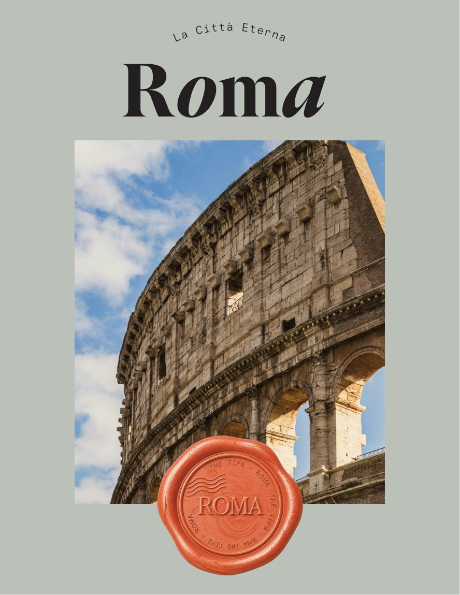
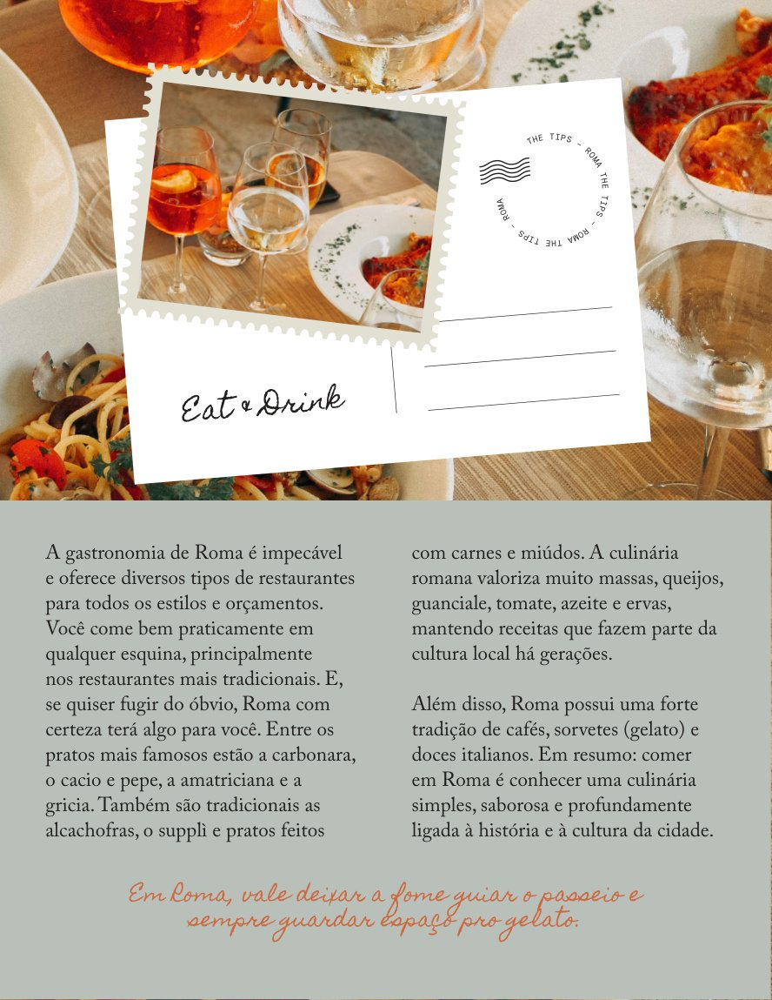
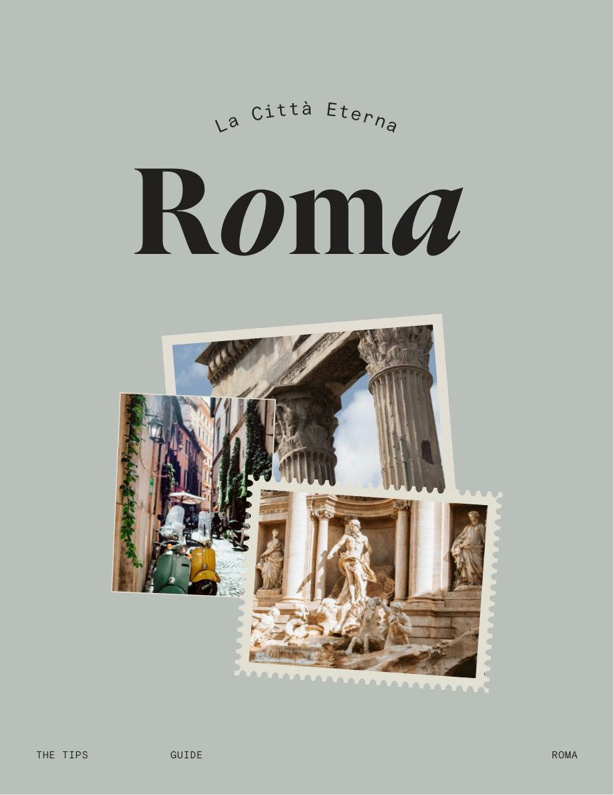
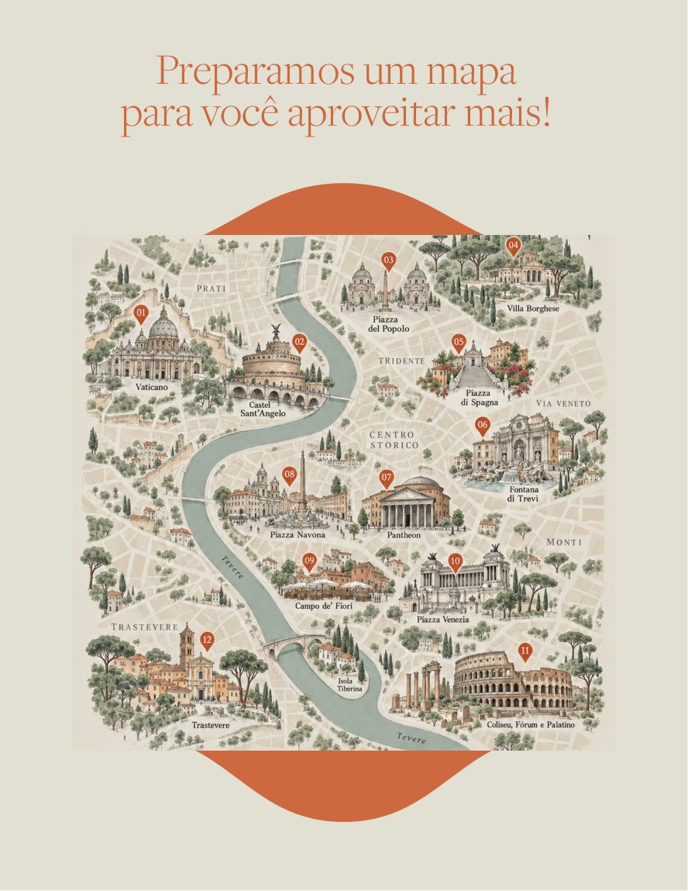
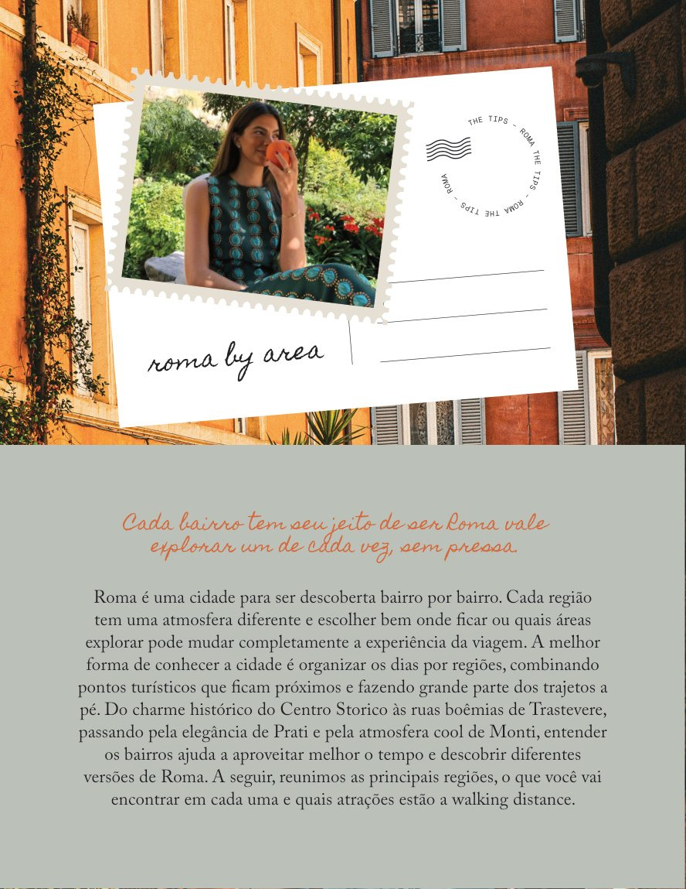
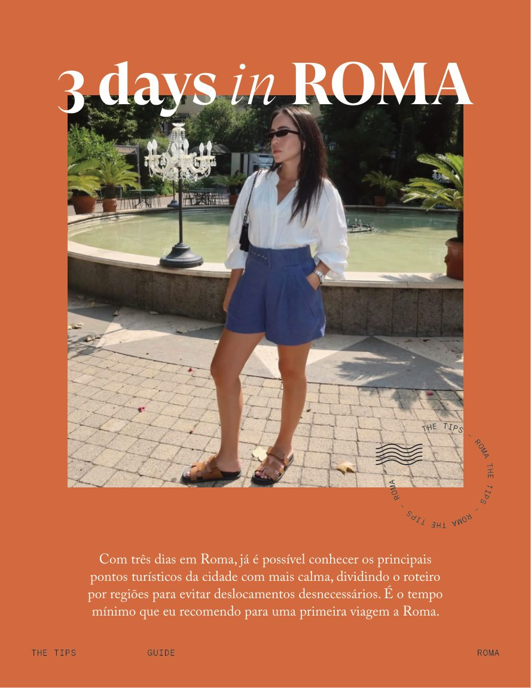

Escolhas com intenção
Seleção de hotéis, restaurantes, cafés, rooftops, passeios e experiências locais.
Um guia de viagem com curadoria de lugares, sabores e experiências para descobrir a Cidade Eterna no seu ritmo.
Descubra o guia ↗
Entre clássicos imperdíveis e descobertas menos óbvias, o The Tips reúne recomendações, informações práticas e roteiros para você planejar uma experiência com mais personalidade.
Seleção de hotéis, restaurantes, cafés, rooftops, passeios e experiências locais.
Dicas de regiões, deslocamentos, reservas e organização dos dias.
Roteiros de diferentes durações para inspirar uma viagem do seu jeito.

Dos pratos romanos aos pequenos tesouros escondidos nas ruas, o guia organiza sugestões e descobertas para ajudar você a aproveitar Roma com mais confiança.
Fotografias, mapas e sugestões que fazem parte da edição de Roma. Abaixo, uma pequena amostra visual do material original.




“Menos tempo pesquisando e mais tempo vivendo a viagem.”THE TIPS
Fotografias e informações biográficas extraídas da apresentação das autoras no Guia The Tips — Roma.
Descubra Roma com um guia que reúne planejamento, lugares e experiências em uma única curadoria.
Conteúdo digital · Edição apresentada para demonstração
Demonstração: preço, disponibilidade, entrega e checkout Hotmart ainda não configurados. Este botão não realiza compras.
Conteúdos de planejamento, gastronomia, hospedagem, atrações, compras, bairros, roteiros e escapadas a partir de Roma, conforme a edição disponibilizada pelas autoras.
O material apresenta sugestões para 24 horas, 48 horas, três dias e cinco dias, além de recomendações para adaptar o planejamento.
Esta é uma demonstração navegável. O checkout, o preço e as condições de venda serão inseridos depois da aprovação e da configuração do produto na Hotmart.
Sim. Horários, regras, preços, estabelecimentos e disponibilidade podem mudar. Consulte as fontes oficiais antes de realizar reservas ou viajar.